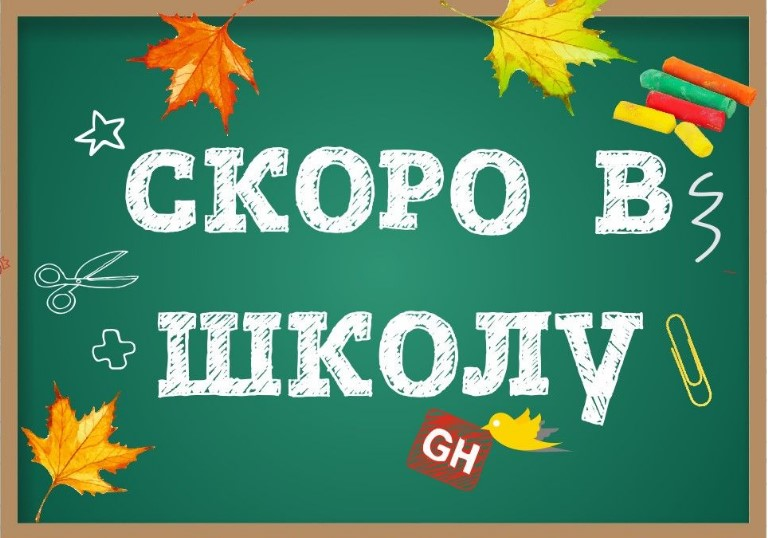

29 августа 2026 · Минск, клуб «Логово Дракона»
Организатор: Роман
В Школу АОСа как вы могли понять. Турнир приуроченный к 1 сентября и сборам детей и себя к осени и новым знаниям.
Особенностью данного турнира будет условное деление игроков на Старшую, Среднюю и Младшую школу, а именно подгруппы для определения парингов. Если вы побеждаете, то переходите на ступень вверх, если проигрываете - на ступень вниз.
Из-за ограничений по времени и количеству туров это не повлияет на обычную стандартную таблицу очков, но позволит вам обсудить как вы выросли или деградировали =)
И так, начнем по-порядку:
Все игроки поделятся на 3 группы согласно своему развитию (ЭЛО), что приводит нас к тому что все будут играть с более-менее равными себе.
После первого и второго туров случится редрафт групп - это покажет ваше текущее развитие и вы получите соответствующего оппонента.
Победители же определяются по итоговому зачету набранных очков в турнире (стандартная схема).
Все получат праздничные призы к предстоящему учебному году и пусть никто не уйдет обиженным.
Дерзайте!

📅 Когда: 29 августа в 10:00
📍 Где: Клуб "Логово Дракона", г.Минск, ул. Кальварийская, 21/8
💰 Стоимость участия: 40 рублей
| Начало | Конец | Порядок телодвижений |
|---|---|---|
| 10:00 | 10:15 | Паринги и регистрация |
| 10:15 | 13:15 | 1 тур |
| 13:15 | 14:15 | Большой перерыв |
| 14:15 | 17:15 | 2 тур |
| 17:15 | 17:30 | Перерыв |
| 17:30 | 20:30 | 3 тур |
| 20.30 | 21.00 | Подсчет очков и награждение |
За партию можно получить до 20 турнирных очков, которые делятся между игроками следующим образом:
Список участников пока не объявлен.